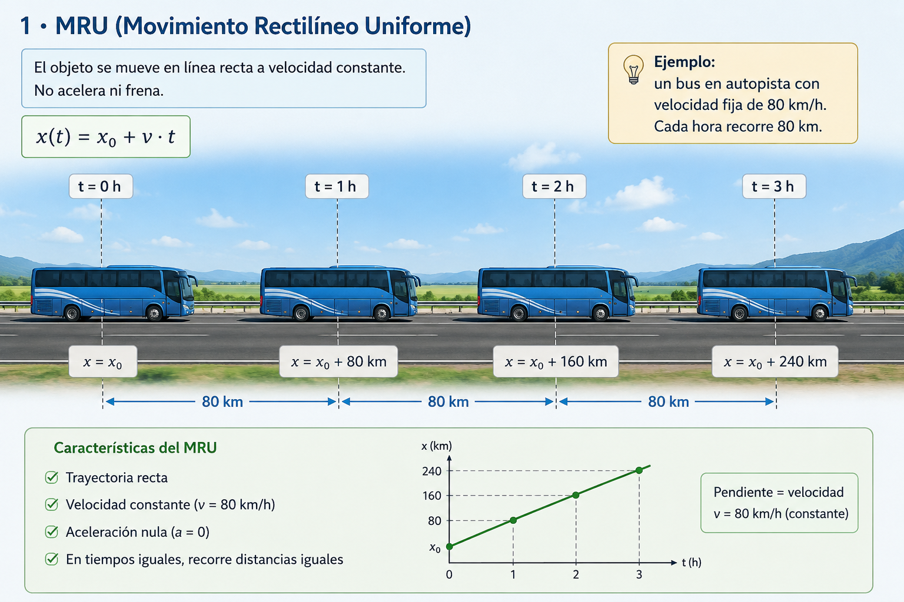
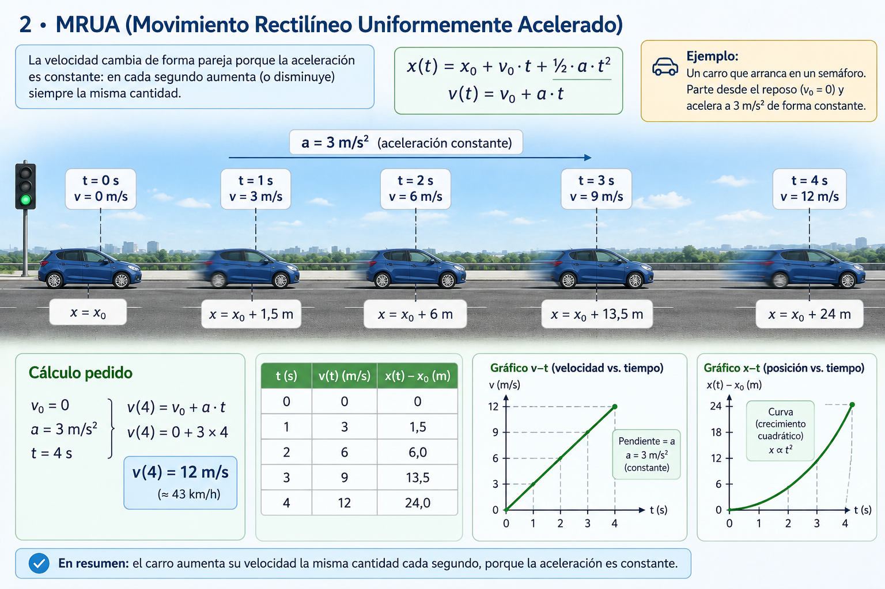
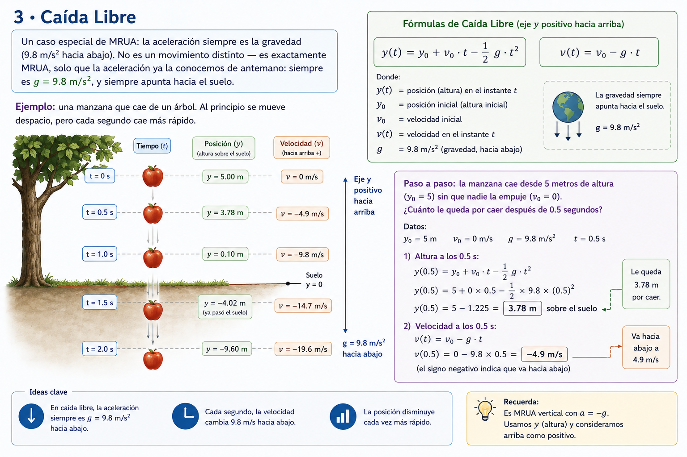

FÍSICA
Movimiento Rectilíneo
Conceptos fundamentales y leyes de la cinemática
Movimiento Rectilíneo
Fundamentos
Antes de estudiar los diferentes tipos de movimiento, necesitamos
comprender algunos conceptos fundamentales.
¿Alguna vez te has preguntado cómo describir el movimiento de un
carro, una pelota o incluso una persona caminando? La
cinemática es la parte de la física que estudia cómo
se mueven los objetos, sin preocuparse todavía por las fuerzas que los
empujan o frenan.
Posición (x)
Indica dónde se encuentra un objeto en un momento determinado. Se
mide normalmente en metros (m).
Velocidad (v)
Indica qué tan rápido se mueve un objeto y en qué dirección. Se mide
en metros por segundo (m/s).
Aceleración (a)
Indica qué tan rápido cambia la velocidad de un objeto. Se mide en
metros por segundo al cuadrado (m/s²).
¿Qué aprenderemos?
Con estos tres conceptos podemos explicar diferentes situaciones de
movimiento. En esta página estudiaremos tres casos principales:
MRU
La velocidad no cambia.
MRUA
La velocidad cambia a un ritmo constante.
Caída Libre
Movimiento acelerado por la gravedad.
ANTES DE CALCULAR
Signos y Unidades
Dos cosas que debes tener claras antes de resolver cualquier problema
de movimiento.
En esta página utilizaremos principalmente el
Sistema Internacional de Unidades (SI).
m
metros
posición
s
segundos
tiempo
m/s
metros por segundo
velocidad
m/s²
metros por segundo²
aceleración
Los signos indican la dirección del movimiento.
Primero debes elegir qué dirección será positiva.
Positivo (+)
Hacia la dirección elegida
Negativo (−)
En dirección contraria
Un valor negativo no significa que el objeto vaya "más lento".
Significa que se mueve en la dirección opuesta a la que elegiste
como positiva.
REGLA DE ORO
Antes de sustituir valores en una fórmula,
revisa las unidades y define la dirección positiva.
01 · MOVIMIENTO
MRU
Movimiento Rectilíneo Uniforme

El objeto se mueve en línea recta a velocidad constante. No acelera ni
frena: si vas a 80 km/h, sigues a 80 km/h todo el trayecto.
Esto es lo que significa cada letra de la fórmula:
-
x(t) — la posición del objeto en el instante t (lo que
queremos calcular).
-
x0 — la posición donde empezó (posición inicial). Si arranca
desde el punto de referencia, x0 = 0.
- v — la velocidad, que no cambia en todo el recorrido.
- t — el tiempo transcurrido desde que empezó a moverse.
x(t) = x0 + v·t
Ejemplo: un bus en autopista con velocidad fija de 80 km/h. Cada hora
recorre 80 km.
Paso a paso:
si el bus parte del kilómetro 0 (x0 = 0) y mantiene 80 km/h (v = 80),
¿dónde estará después de 2.5 horas?
x(2.5) = 0 + 80 × 2.5 = 200 km
No hace falta nada más complicado: multiplicar velocidad por tiempo y
sumarle el punto de partida.
02 · MOVIMIENTO
MRUA
Movimiento Rectilíneo Uniformemente Acelerado

La velocidad cambia de forma pareja porque la aceleración es constante.
"Pareja" quiere decir que en cada segundo la velocidad aumenta (o
disminuye) siempre la misma cantidad.
Variables nuevas respecto al MRU:
-
v0 — la velocidad inicial, con la que arranca el objeto (puede
ser cero, como un carro detenido).
-
a — la aceleración: cuánto cambia la velocidad cada segundo. Si
es positiva, el objeto acelera; si es negativa, frena.
-
v(t) — la velocidad en el instante t (distinta de la posición
x(t)).
x(t) = x0 + v0·t + ½·a·t²
v(t) = v0 + a·t
Ejemplo: un carro que arranca en un semáforo. Cada segundo aumenta su
velocidad de manera uniforme.
Paso a paso:
el carro arranca desde el reposo (v0 = 0) y acelera a 3 m/s². ¿Qué
velocidad lleva a los 4 segundos?
v(4) = 0 + 3 × 4 = 12 m/s (unos 43 km/h)
Fíjate que no importa dónde esté (x); la velocidad solo depende de
cuánto tiempo ha estado acelerando.
Nota:
"frenar" también es MRUA — solo que la aceleración tiene signo contrario
a la velocidad. Un carro que va hacia adelante y frena tiene una
aceleración "hacia atrás".
03 · MOVIMIENTO
Caída Libre

Un caso especial de MRUA: la aceleración siempre es la gravedad (9.8
m/s² hacia abajo). No es un movimiento distinto — es exactamente MRUA,
solo que la aceleración ya la conocemos de antemano: siempre es
g = 9.8 m/s², y siempre apunta hacia el suelo.
Por eso la fórmula se ve casi igual que la de MRUA, solo que usamos
y en vez de x (porque el movimiento es vertical) y
reemplazamos "a" por "−g":
y(t) = y0 + v0·t − ½·g·t²
v(t) = v0 − g·t
Ejemplo: una manzana que cae de un árbol. Al principio se mueve
despacio, pero cada segundo cae más rápido.
Paso a paso:
la manzana cae desde 5 metros de altura (y0 = 5) sin que nadie la empuje
(v0 = 0). ¿Cuánto le queda por caer después de 0.5 segundos?
y(0.5) = 5 + 0×0.5 − ½×9.8×0.5² = 5 − 1.225 = 3.78 m sobre el
suelo
Y su velocidad en ese momento:
v(0.5) = 0 − 9.8×0.5 = −4.9 m/s
(el signo negativo solo indica que va hacia abajo).
¿Y si se lanza hacia arriba?
Todo funciona igual, solo que v0 es positiva. El objeto sube, frena
(porque la gravedad siempre tira hacia abajo), se detiene un instante en
el punto más alto, y luego cae — como una pelota lanzada al aire.
HERRAMIENTAS INTERACTIVAS
Calculadoras de Física
Experimenta con diferentes tipos de movimiento, introduce tus propios
valores y observa los resultados mediante nuestras calculadoras
interactivas.
01
Movimiento Rectilíneo Uniforme
Calcula la posición de un objeto que se mueve con velocidad
constante.
Abrir calculadora →
02
Movimiento Rectilíneo Uniformemente Acelerado
Calcula la posición de un objeto considerando su velocidad inicial y
aceleración.
Abrir calculadora →
03
Caída Libre
Simula el movimiento y calcula la altura y velocidad de un objeto bajo la acción de la gravedad.
Abrir calculadora →
INTERPRETACIÓN
Cómo leer los gráficos
No hace falta memorizar fórmulas para leer un gráfico de movimiento —
basta con saber qué preguntar. Aquí va la idea general antes de los
detalles:
-
La inclinación de la línea (lo que en física se llama
pendiente) siempre te dice "qué tan rápido cambia" lo que se
está graficando.
-
El espacio bajo la línea (el área entre la curva y el eje
horizontal) te dice "cuánto se acumuló" en total durante ese tiempo.
Gráfico posición–tiempo (x-t)
-
Recta = velocidad constante (bus en autopista). Entre más
inclinada la recta, más rápido va.
-
Curva = la velocidad cambia (carro acelerando). Si la curva
se va "empinando", el objeto va cada vez más rápido; si se va
aplanando, va frenando.
-
Línea horizontal = el objeto está detenido (su posición no
cambia con el tiempo).
Gráfico velocidad–tiempo (v-t)
-
Línea horizontal = velocidad fija (MRU) — no hay aceleración.
-
Línea inclinada = acelera o frena (MRUA). Si sube, acelera;
si baja, frena o cae.
-
El área bajo esta línea (entre la línea y el eje del tiempo)
es la distancia recorrida — igual que en un carro, donde velocidad ×
tiempo = distancia.
Gráfico aceleración–tiempo (a-t)
- Línea plana en cero = no hay aceleración (MRU).
-
Línea plana en otro valor = aceleración constante (MRUA o
gravedad en caída libre).
-
Casi nunca vas a ver una curva aquí en estos tres movimientos,
porque en los tres la aceleración no cambia con el tiempo — es
plana, arriba, en cero o abajo del eje.
Truco rápido para identificar el movimiento con solo mirar el gráfico
x-t:
si es una línea recta, es MRU. Si es una curva, es MRUA o caída libre.
COMPARACIÓN
Tabla comparativa
| Movimiento |
Aceleración |
Fórmula de posición |
Ejemplo cotidiano |
| MRU |
a = 0 |
x = x0 + v·t |
Bus en autopista |
| MRUA |
a = constante |
x = x0 + v0·t + ½at² |
Carro que arranca o frena |
| Caída libre |
a = −9.8 m/s² |
y = y0 + v0·t − ½gt² |
Manzana que cae de un árbol |
PARA RECORDAR
Errores comunes
-
Confundir posición con distancia recorrida.
La posición te dice "dónde está" el objeto; la distancia recorrida te
dice "cuánto caminó" en total. Si vas y vuelves al mismo punto, tu
posición final es la misma que la inicial, pero sí recorriste
distancia.
-
Pensar que una curva hacia abajo significa "velocidad negativa".
En el gráfico de posición, una curva que baja solo significa que el
objeto se está moviendo hacia el lado que definimos como negativo — no
que algo ande "mal" o "al revés".
-
Creer que velocidad cero significa que nunca se movió.
Un objeto puede tener velocidad cero en un instante puntual (por
ejemplo, en el punto más alto de un lanzamiento) y haber estado
moviéndose todo el resto del tiempo.
-
Mezclar rapidez con velocidad.
La rapidez es solo el número (qué tan "rápido"); la velocidad incluye
además la dirección. Por eso la velocidad puede ser negativa, pero la
rapidez nunca.
-
Olvidar las unidades.
Una aceleración de "3" no significa nada sin unidades — 3 m/s² es muy
distinto a 3 km/h². Siempre verifica que todos los datos estén en las
mismas unidades antes de calcular.
CONCEPTOS CLAVE
Glosario rápido
| Término |
Qué significa |
| Posición (x) |
El lugar donde está el objeto respecto a un punto de referencia.
|
| Desplazamiento |
La diferencia entre la posición final y la inicial. No es lo
mismo que la distancia recorrida.
|
| Velocidad (v) |
Qué tan rápido cambia la posición, incluyendo la dirección (por
eso puede ser negativa).
|
| Rapidez |
Lo mismo que la velocidad, pero sin importar la dirección —
siempre es un número positivo.
|
| Aceleración (a) |
Qué tan rápido cambia la velocidad. Puede hacer que el objeto
vaya más rápido o que frene.
|
| Pendiente |
Qué tan inclinada está una línea en un gráfico; indica qué tan
rápido cambia lo que se está graficando.
|
| Área bajo la curva |
El espacio entre la línea del gráfico y el eje horizontal; en un
gráfico v-t, esa área es la distancia recorrida.
|